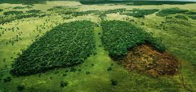

Podemos definir la deforestación como el proceso de despojar un terreno forestal de sus plantas y árboles , es decir de su vegetación. Los bosques cumplen valiosas funciones en la naturaleza y perderlos es muy perjudicial para el medio ambiente y, además, contribuye al cambio climático, ya que los árboles secuestran carbono mientras crecen. Solo en algunos casos muy concretos este proceso puede ser beneficioso para el planeta. Así, la deforestación se da cuando hay una tala de árboles masiva o descontrolada. Esta produce grandes cambios en el ecosistema, como veremos más adelante. Entre las principales causas de la deforestación podemos encontrar algunas de la mano del ser humano y otras por fenómenos naturales. Solo podemos evitar, solucionar y controlar las primeras y mejorando el estado actual del planeta podemos ayudar a reequilibrar las segundas.
La deforestación se puede producir por causas naturales o a causa de las actividades del ser humano. Un incendio, sin ir más lejos, que produce deforestación puede tener su origen en el hombre o ser provocado por la naturaleza, como por ejemplo al caer un rayo en un árbol. Actualmente, el ritmo de deforestación es demasiado alto. Los bosques son ecosistemas que se recuperan muy lentamente. Algunas variedades de especies de flora e, indirectamente, la fauna que vive allí, están en peligro si el bosque desaparece. Por ello, en este proyecto hablamos sobre la deforestación y sus causas, consecuencias y posibles soluciones. Presta atención porque a continuación, mostramos cuáles son las causas de la deforestación o tala de árboles y muchos más detalles que conviene conocer sobre este tema.
Millones de hectáreas se talan o se queman para extraer la madera y otros productos o para convertir los bosques en tierras de cultivo. Mayoritariamente, estas actividades se realizan en los países en desarrollo, más dependientes de la madera y sin un control adecuado sobre el uso del suelo. No se trata de vivir sin madera o sin papel, ni mucho menos sin alimentos, pero los bosques han de gestionarse de manera sostenible. De ahí la importancia de adquirir productos con el certificado de gestión sostenible.
En ocasiones, los ganaderos arrasan miles de hectáreas de selva, como ocurre en Brasil y otros países, para que el ganado se alimente durante uno o dos años. Después, el suelo queda agotado y tienen que trasladarse a otro lugar.
La expansión de los núcleos urbanos es otra de las causas de la tala de árboles o deforestación que provoca el hombre. Cada vez más gente vive en las ciudades mientras que las zonas rurales sufren despoblación. Se construye desaforadamente y para ello se necesita espacio que se obtiene destruyendo bosques y selvas.
En verano, los incendios forestales acaban con miles de hectáreas de bosque. Además, con el cambio climático estos incendios forestales son cada vez más frecuentes y destructivos. Australia y Estados Unidos están sufriendo, en los últimos años, terribles incendios forestales, en la gran mayoría de los casos, provocados por la negligencia de algunas personas. Pero así como las talas de árboles las provoca el hombre, los incendios no siempre los provoca el hombre. De todos modos, aunque sean naturales, el daño para el medio ambiente que causan los incendios es enorme, aparte de la deforestación en sí.
Las plagas y enfermedades de los árboles es otra de las causas naturales que causan deforestación. Un caso extremo es el que está ocurriendo en los bosques de Norteamérica, donde un escarabajo está masacrando millones de árboles.
Los árboles atraen las lluvias y los bosques son una parte vital en el ciclo del agua. Por esto, al perder masas forestales, se modifica el comportamiento del agua en la zona, pues esta se desplaza hacia otras partes con vegetación.
Lo grave, realmente, es la tala indiscriminada o sin control, aparte de los incendios provocados, ya que sin una reforestación posterior y sin una gestión adecuada de los bosques, esta zona se convertirá en una zona desertificada.
La deforestación lleva a dañar los ecosistemas, a una pérdida de biodiversidad y a la aridez en el terreno. Además, se evita la fijación de dióxido de carbono (CO2), por lo que se contribuye al cambio climático. Las regiones deforestadas tienden a una erosión del suelo y, finalmente, se convierten en tierras no productivas. Lo que lleva a que no crezca ningún tipo de vegetación, no sirva de zona de alimentos y resguardo para animales ni para que nosotros cultivemos alimentos.
Algunos lugares que sufren este problema de forma grave, pues una parte está controlada pero otra muy grande no lo está, son zonas de Latinoamérica, ricas en bosques y selvas, como la zona del Amazonas. En este otro artículo te mostramos la Deforestación del Amazonas, sus causas y consecuencias. Asimismo, la deforestación en México, Argentina, Colombia y el Perú es muy significativa, pues en varias zonas de estos lugares hay tala masiva por diversas razones.
Al perderse los bosques y las selvas, como hemos indicado, se modifica el ciclo del agua y las temperaturas en la región y también a nivel global. Por tanto, se suman más acciones que aceleran el calentamiento global y el cambio climático.
Aparte de conocer las causas de la tala de árboles y las posibles consecuencias de esta, hay que pensar en soluciones de la deforestación y en formas de evitarla. El primer gran paso para evitar la deforestación, como en cualquier ámbito de vital importancia para el planeta, es llegar a un gran acuerdo global entre los Gobiernos de todo el mundo. Se deben establecer medidas preventivas y, también, reparadoras, del problema. Pero en el ámbito personal también se pueden llevar a cabo ciertas acciones. No se puede eludir la responsabilidad personal en este problema. Ciertos gestos, por muy insignificantes que parezcan, pueden ayudar a atajar el problema. Por ejemplo, el reciclaje de papel. Un menor consumo de papel por parte de la población obligaría a las empresas productoras a no necesitar tanta materia prima.
Por otra parte, es esencial mantener limpios bosques y áreas verdes. De este modo, se previenen fuegos ocasionados por cristales, latas de refrescos y otro tipo de desechos. Por último, hay que mantenerse informados sobre las malas prácticas que lleven a cabo las empresas para boicotear, si es el caso, sus productos. Las grandes superficies de bosques y selvas dependen de un consumo responsable. Greenpeace y otras organizaciones ambientalistas publican informes sobre el asunto. Además, consumir productos certificados de gestión sostenible de los bosques (como los que impulsan FSC o PEFC) ayuda a conservar los bosques en buen estado